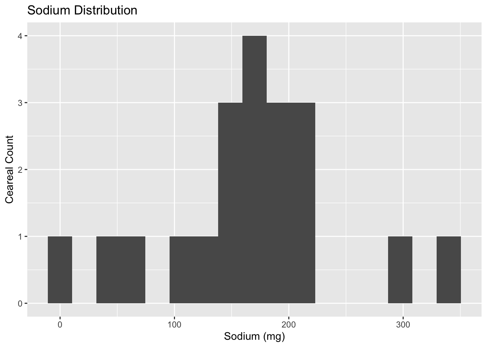
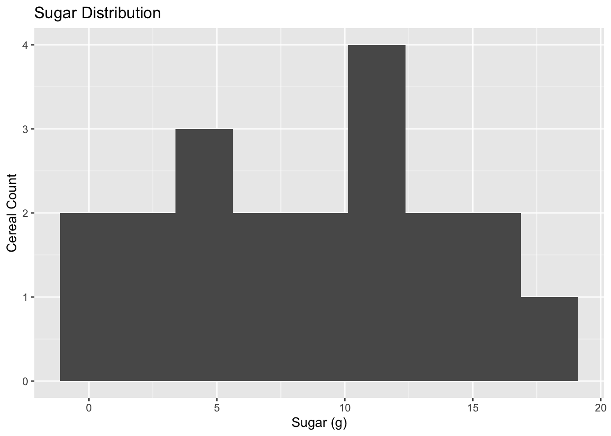
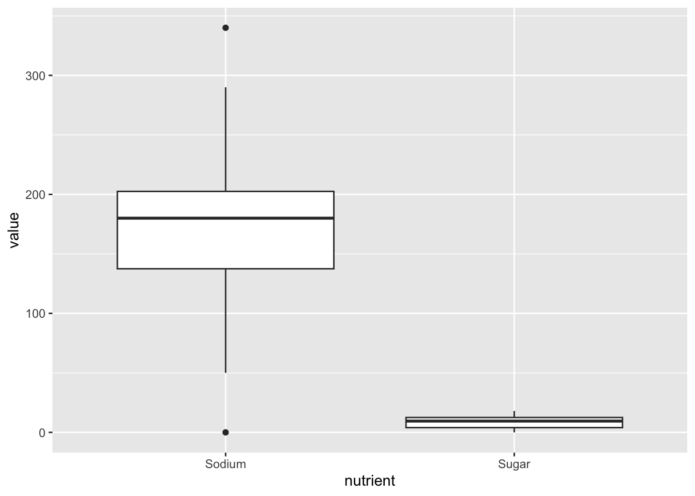
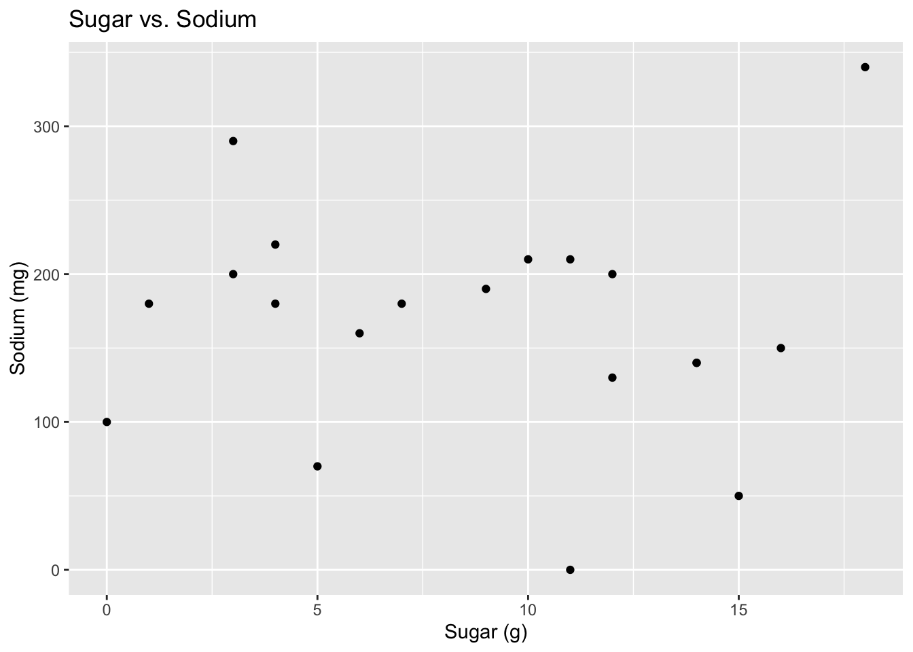
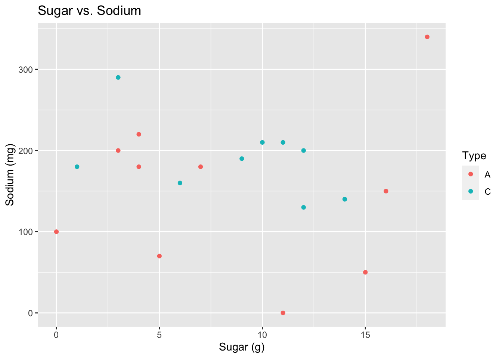

library(tidyverse)
library(ggplot2)
library(readxl)
library(dplyr)
knitr::opts_chunk$set(echo = TRUE, warning=FALSE, message=FALSE)Challenge 5 Solution
challenge_5
railroads
cereal
air_bnb
pathogen_cost
australian_marriage
public_schools
usa_households
Susannah Reed Poland
Introduction to Visualization
Challenge Overview
Today’s challenge is to:
- read in a data set, and describe the data set using both words and any supporting information (e.g., tables, etc)
- tidy data (as needed, including sanity checks)
- mutate variables as needed (including sanity checks)
- create at least two univariate visualizations
- try to make them “publication” ready
- Explain why you choose the specific graph type
- Create at least one bivariate visualization
- try to make them “publication” ready
- Explain why you choose the specific graph type
(be sure to only include the category tags for the data you use!)
Read in data
cereal<-read_csv("_data/cereal.csv")
cerealBriefly describe the data
The “cereal” dataset contains sodium and sugar values for 20 different types of common American breakfast cereals There is a third variable, “type” which classes the cereals as A, B, or C, but there is no key for these values. The units of measurement for sugar and sodium are not specified, but milligrams is a reasonable assumption.
Tidy Data (as needed)
In the cereal dataset, each line is a unique case: cereal and its respective amounts of sugar and sodium, and the cereal type.
Univariate Visualizations
To see the distribution of amounts of sodium and sugar, we can create simple histograms for each variable. This will allow us to see how how many cereals have various amounts of sugar or sodium.
#How many bins should there be in the Sodium histogram, if we want each bin to represent a range of 20mgs? (Divide the total mg range by 20, and round up to the nearest integer.)
n_bins_salt <- round((max(cereal$Sodium) - min(cereal$Sodium))/20)
n_bins_salt[1] 17#Ans: 17
#generate the Sodium histogram
ggplot(cereal, aes(x=Sodium)) + geom_histogram(bins=n_bins_salt) + labs(title = "Sodium Distribution", x="Sodium (mg)", y = "Ceareal Count")
#generate the Sugar histogram (since the total range of mg is 18, I chose 9 as the number of bins, so that we group values into bins of 2g.)
ggplot(cereal, aes(x=Sugar)) + geom_histogram(bins=9) + labs(title = "Sugar Distribution", x="Sugar (g)", y = "Cereal Count")
#calculate mean to compare with visual distribution
cereal_tendencies<-cereal%>%
summarise(mean_sodium = mean(Sodium), mean_sugar = mean(Sugar))The Sodium histogram shows that, except for a few outliers on either side, most cereals contain between 100 and 220 mg of sodium. The calculated mean (167 mg) does align with the max of the distribution curve and therefore is a good representation of the central tendency.
The shape of the Sugar histogram varies greatly depending on the number of bins. With 10 or 12 bins, the data are grouped so that there are multiple counts of 3, but with 15 bins (just shy of the total range of 18) there is a large cluster of values around 12mg. I ended up choosing a bin range of 2mg. In this view, the distribution seems to be fairly even with a cluster around 12mg, and no outliers.
I would presume that this variation in histograms is because of the small size of the dataset – we don’t have enough values to create a meaningful histogram. The the mean of 8.75mg is not a good representation of the central tendency.
For both the Sodium and Sugar histograms, it should be noted that the frequency of values in both are quite low.
We can compare the distributions of Sugar and Sodium in a boxplot:
#To create a boxplot
cereal %>%
mutate(Sugar = Sugar) %>%
pivot_longer(cols=c(Sodium, Sugar),
names_to = "nutrient",
values_to = "value")%>%
group_by(nutrient)%>%
ggplot(., aes(x = nutrient, y = value)) +
geom_boxplot()
We can clearly see from this boxplot that Sodium has several outiers and is more broadly distributed.
Note: This boxplot is not “publication-ready” - the sugar variable is so small it is nearly unreadable. So long as we keep both variables on the same Y-axis, this is inevitable. But I learned from Sean’s demonstration that it’s possible to create a second Y-axis so that the 2 boxplots appear similarly alongside one another — I will familiarize myself and try these arguments in future plots!
Bivariate Visualizations
How do levels of sugar and sodium compare? Is there a relationship between the relative levels of sugar and sodium? To check for a relationship, we can create a scatterplot of Sugar against Sodium, where each point represents a single Cereal type.
#Scatterplot Sugar vs. Sodium
ggplot(cereal, aes(x=Sugar, y=Sodium)) + geom_point() + labs(title = "Sugar vs. Sodium", x="Sugar (g)", y = "Sodium (mg)")
There does not seem to be a relationship between sugar and sodium content.
We still don’t know what the “Type” variable is – might this show a systematic relationship to the other variables?
#Scatterplot Sugar vs. Sodium with Types
ggplot(cereal, aes(x=Sugar, y=Sodium, color=Type)) + geom_point() + labs(title = "Sugar vs. Sodium", x="Sugar (g)", y = "Sodium (mg)")
No, the cereal Type doesn’t seem to show a relationship to these variables.